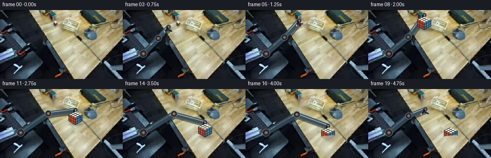
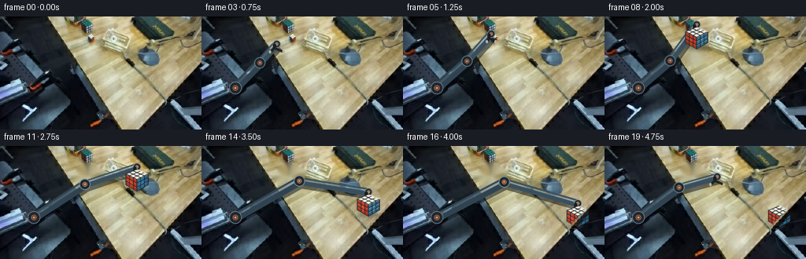
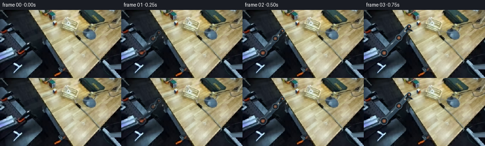

CODING AGENTS AS PIXEL WORLD MODELS
traex/GPT-5.6-Sol · common50_0010
点击播放 · 原生 RGB 像素
逐轮保存的候选
回放视频、检查图与代码变化。
每份候选均可单独播放。实际图片检查记录在下方工具轨迹中。
候选 01播放与检查图
点击播放 · 原生 RGB 像素

展开代码变化
--- 上一保存版本
+++ 本次保存版本
@@ -0,0 +1,208 @@
+from pathlib import Path
+import math
+import numpy as np
+import cv2
+from PIL import Image, ImageDraw, ImageFilter
+import artifact_io
+
+CASE = Path(__file__).resolve().parent
+SRC = np.array(Image.open(CASE / 'first_frame.png').convert('RGB'), dtype=np.uint8)
+H, W = SRC.shape[:2]
+S = 4 # supersampling for clean, stable geometry
+rng = np.random.default_rng(12)
+
+
+def smooth(x):
+ x = np.clip(x, 0.0, 1.0)
+ return x*x*(3-2*x)
+
+
+def lerp(a,b,t):
+ return (a[0]+(b[0]-a[0])*t, a[1]+(b[1]-a[1])*t)
+
+
+def ease_path(points, t):
+ """Piecewise path through evenly spaced control points."""
+ if len(points)==1: return points[0]
+ u=np.clip(t,0,1)*(len(points)-1)
+ i=min(int(u),len(points)-2); f=smooth(u-i)
+ return lerp(points[i],points[i+1],f)
+
+
+def layer_new():
+ return Image.new('RGBA',(W*S,H*S),(0,0,0,0))
+
+def P(p): return (round(p[0]*S),round(p[1]*S))
+
+def poly(draw, pts, fill, outline=None, width=1):
+ draw.polygon([P(x) for x in pts],fill=fill)
+ if outline: draw.line([P(x) for x in pts+[pts[0]]],fill=outline,width=width*S,joint='curve')
+
+def ellipse(draw, box, fill, outline=None, width=1):
+ draw.ellipse(tuple(round(v*S) for v in box),fill=fill,outline=outline,width=width*S)
+
+def composite(frame, lay, opacity=1.0):
+ lay=lay.resize((W,H),Image.Resampling.LANCZOS)
+ a=np.asarray(lay.getchannel('A'),dtype=np.float32)/255*opacity
+ rgb=np.asarray(lay.convert('RGB'),dtype=np.float32)
+ return np.clip(np.asarray(frame,dtype=np.float32)*(1-a[...,None])+rgb*a[...,None],0,255).astype(np.uint8)
+
+# Source cube cleanup. The mask is deliberately restricted to its isometric silhouette.
+cleanup_mask=np.zeros((H,W),np.uint8)
+cv2.fillConvexPoly(cleanup_mask,np.array([(108,21),(132,31),(122,53),(104,52),(91,37)],np.int32),255)
+cleanup_mask=cv2.dilate(cleanup_mask,np.ones((3,3),np.uint8),iterations=1)
+CLEAN=cv2.inpaint(SRC,cleanup_mask,4,cv2.INPAINT_TELEA)
+# Keep local grain rather than an overly smooth inpaint patch.
+yy,xx=np.mgrid[0:H,0:W]
+grain=((np.sin(xx*.61+yy*.19)+np.sin(xx*.17-yy*.43))*0.7).astype(np.float32)
+cm=cv2.GaussianBlur((cleanup_mask/255.).astype(np.float32),(0,0),1.2)
+CLEAN=np.clip(CLEAN.astype(np.float32)+grain[...,None]*cm[...,None],0,255).astype(np.uint8)
+
+# Face-local subdivision helper for the Rubik cube.
+def bilerp(q,u,v):
+ a=np.array(q[0])*(1-u)+np.array(q[1])*u
+ b=np.array(q[3])*(1-u)+np.array(q[2])*u
+ return tuple(a*(1-v)+b*v)
+
+def draw_face(draw, q, colors, edge=(35,37,38,255)):
+ # black plastic body
+ poly(draw,q,(30,31,31,255),edge,1)
+ for j in range(3):
+ for i in range(3):
+ u0,u1=i/3,(i+1)/3; v0,v1=j/3,(j+1)/3
+ cell=[bilerp(q,u0,v0),bilerp(q,u1,v0),bilerp(q,u1,v1),bilerp(q,u0,v1)]
+ cen=np.mean(np.array(cell),axis=0)
+ cell=[tuple(cen+(np.array(z)-cen)*.79) for z in cell]
+ col=colors[j][i]
+ poly(draw,cell,tuple(col)+(255,))
+ # tiny top-left sheen gives sticker material depth
+ p0=np.array(cell[0]); p1=np.array(cell[1]); p3=np.array(cell[3])
+ draw.line([P(tuple(p0*.88+p3*.12)),P(tuple(p1*.88+p0*.12))],fill=(255,255,255,65),width=max(1,S//2))
+
+def draw_cube(frame, center, scale=1.0, alpha=1.0, shadow=True):
+ cx,cy=center
+ lay=layer_new(); d=ImageDraw.Draw(lay,'RGBA')
+ if shadow:
+ # soft contact/air shadow; becomes a contact shadow when lowered.
+ sh=layer_new(); sd=ImageDraw.Draw(sh,'RGBA')
+ ellipse(sd,(cx-13*scale,cy+11*scale,cx+16*scale,cy+18*scale),(9,9,8,75))
+ sh=sh.filter(ImageFilter.GaussianBlur(2.0*S))
+ frame=composite(frame,sh,alpha)
+ a=(cx,cy-12*scale); b=(cx+14*scale,cy-6*scale); c=(cx,cy+1*scale); e=(cx-14*scale,cy-6*scale)
+ f=(cx,cy+16*scale); br=(cx+14*scale,cy+8*scale); bl=(cx-14*scale,cy+8*scale)
+ # Faces are back-to-front and preserve a rigid shape throughout.
+ whites=[[(235,236,225),(245,245,234),(224,228,218)],[(243,242,230),(238,240,229),(248,246,235)],[(222,225,217),(242,242,231),(232,234,224)]]
+ reds=[[(177,54,37),(194,60,38),(181,50,35)],[(191,58,38),(207,69,42),(187,48,33)],[(167,47,35),(193,56,36),(174,48,32)]]
+ blues=[[(42,101,137),(38,111,150),(41,95,132)],[(38,108,147),(44,119,158),(36,100,140)],[(34,91,129),(40,107,145),(35,96,135)]]
+ draw_face(d,[a,b,c,e],whites)
+ draw_face(d,[e,c,f,bl],reds)
+ draw_face(d,[c,b,br,f],blues)
+ # hard corner highlights
+ d.line([P(a),P(b)],fill=(255,255,246,180),width=S)
+ return composite(frame,lay,alpha)
+
+
+def draw_arm(frame, shoulder, elbow, wrist, grip_open, opacity=1.0):
+ lay=layer_new(); d=ImageDraw.Draw(lay,'RGBA')
+ # Offset dark silhouette/contact shading.
+ pts=[shoulder,elbow,wrist]
+ d.line([P((x+2,y+3)) for x,y in pts],fill=(6,10,14,125),width=13*S,joint='curve')
+ # Stable industrial blue-grey links, thick enough to read but matched to the source arm.
+ d.line([P(shoulder),P(elbow)],fill=(47,67,82,255),width=12*S)
+ d.line([P(elbow),P(wrist)],fill=(57,79,94,255),width=10*S)
+ d.line([P((shoulder[0]-1,shoulder[1]-2)),P((elbow[0]-1,elbow[1]-2))],fill=(113,139,153,150),width=3*S)
+ d.line([P((elbow[0]-1,elbow[1]-2)),P((wrist[0]-1,wrist[1]-2))],fill=(126,148,160,145),width=2*S)
+ # joints
+ for (x,y),r in [(shoulder,8),(elbow,7),(wrist,5)]:
+ ellipse(d,(x-r,y-r,x+r,y+r),(29,40,49,255),(112,135,146,220),1)
+ ellipse(d,(x-r*.43,y-r*.43,x+r*.43,y+r*.43),(109,57,39,255),(178,108,75,210),1)
+ ellipse(d,(x-r*.16,y-r*.16,x+r*.16,y+r*.16),(184,174,146,230))
+ # gripper is kept aligned vertically around the cube.
+ wx,wy=wrist
+ jaw=4.0+4.0*grip_open
+ d.line([P((wx-3,wy)),P((wx-3,wy+7))],fill=(24,29,32,255),width=4*S)
+ d.line([P((wx-3,wy+5)),P((wx-jaw,wy+10))],fill=(28,33,35,255),width=3*S)
+ d.line([P((wx-3,wy+5)),P((wx+jaw,wy+10))],fill=(28,33,35,255),width=3*S)
+ # pale pads at tips
+ ellipse(d,(wx-jaw-2,wy+8,wx-jaw+1,wy+12),(171,174,165,255))
+ ellipse(d,(wx+jaw-1,wy+8,wx+jaw+2,wy+12),(171,174,165,255))
+ return composite(frame,lay,opacity)
+
+
+def add_crate_occlusion(frame, amount=1.0):
+ """Restore exact source wood across the near rim, so the cube really enters it."""
+ # Upper boundary follows the numerically detected slanted crate lip.
+ mask=np.zeros((H,W),np.float32)
+ cv2.fillPoly(mask,[np.array([(145,100),(184,96),(205,111),(205,144),(145,144)],np.int32)],1)
+ mask=cv2.GaussianBlur(mask,(0,0),.65)*amount
+ return np.clip(frame.astype(np.float32)*(1-mask[...,None])+SRC.astype(np.float32)*mask[...,None],0,255).astype(np.uint8)
+
+frames=[]
+start=(112.0,37.0)
+# Pickup and transfer route: lift away from table, sweep over opening, then descend.
+route=[start,(116,25),(139,37),(160,62),(171,79),(172,92)]
+
+for k in range(20):
+ if k==0:
+ frames.append(SRC.copy()); continue
+
+ # Remove the original cube only after the gripper has enclosed it.
+ if k<=5:
+ frame=SRC.copy()
+ elif k==6:
+ # soft transition from source appearance to the articulated cube
+ frame=SRC.copy()
+ else:
+ frame=CLEAN.copy()
+
+ # Cube motion and handling state.
+ if k<=5:
+ cube_pos=start; carrying=False; cube_alpha=0
+ elif k<=15:
+ t=(k-6)/9
+ cube_pos=ease_path(route,t); carrying=True; cube_alpha=smooth(min(1,(k-5)/2))
+ else:
+ cube_pos=(172.0,92.0); carrying=False; cube_alpha=1
+
+ # End-effector motion. Approach is slow, transfer is one continuous kinematic sweep,
+ # then the empty gripper retracts left/up while the cube remains stable.
+ if k<=5:
+ t=smooth((k-1)/4)
+ wrist=lerp((79,48),(112,22),t)
+ grip=1.0-smooth(max(0,(k-3)/2))*.75
+ elif k<=15:
+ wrist=(cube_pos[0],cube_pos[1]-15)
+ grip=.20
+ else:
+ t=smooth((k-16)/3)
+ wrist=lerp((172,77),(119,42),t)
+ grip=smooth(t)
+
+ # Kinematically coherent elbow follows the target while avoiding the crate.
+ shoulder=(43.0,91.0)
+ ex=67 + (wrist[0]-79)*.43
+ ey=59 - (wrist[0]-95)*.13 + max(0,wrist[1]-55)*.18
+ elbow=(ex,ey)
+ op=.32+.68*smooth(k/3) # gentle continuity from exact mandated first frame
+ frame=draw_arm(frame,shoulder,elbow,wrist,grip,op)
+
+ # At grasp, overlay the rigid cube. Before that, the exact source cube remains untouched.
+ if k>=6:
+ # Slightly diminish scale as it goes down into the opening, never deforming it.
+ sc=1.0 if k<16 else .98
+ frame=draw_cube(frame,cube_pos,sc,cube_alpha,True)
+
+ # Near wall occludes the bottom half only during final insertion/release.
+ if k>=15:
+ frame=add_crate_occlusion(frame,smooth((k-14)/3))
+ # redraw the still-visible upper portion at reduced alpha to keep the white face legible
+ if k>=17:
+ # source rim naturally covers lower pixels; no artificial box added
+ pass
+
+ frames.append(frame.astype(np.uint8))
+
+frames=np.stack(frames).astype(np.uint8)
+assert frames.shape==(20,144,256,3)
+assert np.array_equal(frames[0],SRC)
+artifact_io.save(frames,CASE)
候选 02播放与检查图
点击播放 · 原生 RGB 像素

展开代码变化
--- 上一保存版本
+++ 本次保存版本
@@ -131,16 +131,18 @@
def add_crate_occlusion(frame, amount=1.0):
"""Restore exact source wood across the near rim, so the cube really enters it."""
- # Upper boundary follows the numerically detected slanted crate lip.
+ # Upper boundary follows the numerically detected slanted crate lip
+ # (the strong source edge from about (170,92) to (198,68)).
mask=np.zeros((H,W),np.float32)
- cv2.fillPoly(mask,[np.array([(145,100),(184,96),(205,111),(205,144),(145,144)],np.int32)],1)
+ cv2.fillPoly(mask,[np.array([(157,107),(157,92),(170,92),(199,67),
+ (207,76),(207,121),(184,140)],np.int32)],1)
mask=cv2.GaussianBlur(mask,(0,0),.65)*amount
return np.clip(frame.astype(np.float32)*(1-mask[...,None])+SRC.astype(np.float32)*mask[...,None],0,255).astype(np.uint8)
frames=[]
start=(112.0,37.0)
# Pickup and transfer route: lift away from table, sweep over opening, then descend.
-route=[start,(116,25),(139,37),(160,62),(171,79),(172,92)]
+route=[start,(116,25),(141,34),(166,52),(182,67),(184,78)]
for k in range(20):
if k==0:
@@ -162,7 +164,7 @@
t=(k-6)/9
cube_pos=ease_path(route,t); carrying=True; cube_alpha=smooth(min(1,(k-5)/2))
else:
- cube_pos=(172.0,92.0); carrying=False; cube_alpha=1
+ cube_pos=(184.0,78.0); carrying=False; cube_alpha=1
# End-effector motion. Approach is slow, transfer is one continuous kinematic sweep,
# then the empty gripper retracts left/up while the cube remains stable.
@@ -175,7 +177,7 @@
grip=.20
else:
t=smooth((k-16)/3)
- wrist=lerp((172,77),(119,42),t)
+ wrist=lerp((184,63),(119,42),t)
grip=smooth(t)
# Kinematically coherent elbow follows the target while avoiding the crate.
候选 03播放与检查图
候选 04播放与检查图
点击播放 · 原生 RGB 像素


展开代码变化
--- 上一保存版本
+++ 本次保存版本
@@ -131,18 +131,18 @@
def add_crate_occlusion(frame, amount=1.0):
"""Restore exact source wood across the near rim, so the cube really enters it."""
- # Upper boundary follows the numerically detected slanted crate lip
- # (the strong source edge from about (170,92) to (198,68)).
+ # Narrow band follows the numerically detected slanted near lip on the
+ # right (the strong source edge from about (177,142) to (255,58)).
+ # Reinstating its exact source pixels lets the cube pass *behind* it.
mask=np.zeros((H,W),np.float32)
- cv2.fillPoly(mask,[np.array([(157,107),(157,92),(170,92),(199,67),
- (207,76),(207,121),(184,140)],np.int32)],1)
+ cv2.fillPoly(mask,[np.array([(176,139),(182,144),(255,66),(255,57)],np.int32)],1)
mask=cv2.GaussianBlur(mask,(0,0),.65)*amount
return np.clip(frame.astype(np.float32)*(1-mask[...,None])+SRC.astype(np.float32)*mask[...,None],0,255).astype(np.uint8)
frames=[]
start=(112.0,37.0)
# Pickup and transfer route: lift away from table, sweep over opening, then descend.
-route=[start,(116,25),(141,34),(166,52),(182,67),(184,78)]
+route=[start,(116,25),(146,31),(178,43),(205,63),(222,88)]
for k in range(20):
if k==0:
@@ -164,7 +164,7 @@
t=(k-6)/9
cube_pos=ease_path(route,t); carrying=True; cube_alpha=smooth(min(1,(k-5)/2))
else:
- cube_pos=(184.0,78.0); carrying=False; cube_alpha=1
+ cube_pos=(222.0,88.0); carrying=False; cube_alpha=1
# End-effector motion. Approach is slow, transfer is one continuous kinematic sweep,
# then the empty gripper retracts left/up while the cube remains stable.
@@ -177,7 +177,7 @@
grip=.20
else:
t=smooth((k-16)/3)
- wrist=lerp((184,63),(119,42),t)
+ wrist=lerp((222,73),(143,39),t)
grip=smooth(t)
# Kinematically coherent elbow follows the target while avoiding the crate.
可观测工具轨迹
实际执行的命令与返回图片。
命令 1exit 0
/bin/bash -lc "cat prompt.txt && printf '\\n---RULES---\\n' && cat GENERATION_RULES.md"
命令 2exit 127
/bin/bash -lc "find . -maxdepth 2 -type f -printf '%p\\n' | sort && file first_frame.png"
命令 3exit 0
/bin/bash -lc "cat task_spec.json && sed -n '1,240p' artifact_io.py"
命令 4exit 0
/bin/bash -lc "python - <<'PY'
from PIL import Image
import numpy as np
im=np.array(Image.open('first_frame.png').convert('RGB'))
print(im.shape, im.dtype)
# coarse 8x8 block mean with nearest color labels
chars=' .:-=+*#%@'
g=im.mean(2)
for y in range(0,144,6):
print(''.join(chars[min(9,int(g[y:y+6,x:x+4].mean()/256*10))] for x in range(0,256,4)))
# unique dominant-ish/object color ranges and bounding boxes
for name,m in [
('white',(im.min(2)>205)),('dark',(im.max(2)<70)),('red',(im[:,:,0]>130)&(im[:,:,0]>im[:,:,1]*1.35)),
('green',(im[:,:,1]>90)&(im[:,:,1]>im[:,:,0]*1.25)),('blue',(im[:,:,2]>100)&(im[:,:,2]>im[:,:,0]*1.3)),
('yellow',(im[:,:,0]>150)&(im[:,:,1]>120)&(im[:,:,2]<100)),
('wood',(im[:,:,0]>110)&(im[:,:,0]<220)&(im[:,:,1]>60)&(im[:,:,1]<170)&(im[:,:,2]<110))]:
ys,xs=np.where(m)
print(name, len(xs), (xs.min(),ys.min(),xs.max(),ys.max()) if len(xs) else None)
PY"命令 5exit 0
/bin/bash -lc "python - <<'PY'
from PIL import Image
import numpy as np
from sklearn.cluster import KMeans
im=np.array(Image.open('first_frame.png').convert('RGB'))
# fit 16 clusters
pix=im.reshape(-1,3)
km=KMeans(18,random_state=2,n_init=10).fit(pix[::3])
lab=km.predict(pix).reshape(im.shape[:2])
cent=np.rint(km.cluster_centers_).astype(int)
# sort clusters by luminance and assign symbols
order=np.argsort(cent.mean(1)); syms='0123456789ABCDEFGH'
mp={int(k):syms[i] for i,k in enumerate(order)}
print('symbol RGB count bbox')
for k in order:
ys,xs=np.where(lab==k)
print(mp[int(k)],cent[k].tolist(),len(xs),(xs.min(),ys.min(),xs.max(),ys.max()))
# majority over 4x4 blocks
print('\\nMAP 4x4')
for y in range(0,144,4):
s=''
for x in range(0,256,4):
b=lab[y:y+4,x:x+4].ravel(); k=np.bincount(b,minlength=18).argmax();s+=mp[k]
print(s)
PY"命令 6exit 0
/bin/bash -lc "python - <<'PY'
from PIL import Image
import numpy as np
im=np.array(Image.open('first_frame.png').convert('RGB'))
for y in range(0,144,12):
print('\\ny',y)
for x in range(0,256,16):
a=im[y:y+12,x:x+16]; m=a.mean((0,1)).astype(int); sd=a.std()
print(f'{x:3}:{m[0]:02x}{m[1]:02x}{m[2]:02x}/{sd:2.0f}',end=' ')
print()
PY"命令 7exit 0
/bin/bash -lc "python - <<'PY'
from PIL import Image
import numpy as np
im=np.array(Image.open('first_frame.png').convert('RGB')).astype(float)
g=np.sqrt(((im[:,1:]-im[:,:-1])**2).sum(2))
g=np.pad(g,((0,0),(0,1)))+np.pad(np.sqrt(((im[1:]-im[:-1])**2).sum(2)),((0,1),(0,0)))
# max edges in 2x2, output threshold symbols, each line y=2
for y in range(0,144,2):
print(''.join('##' if g[y:y+2,x:x+2].max()>220 else '++' if g[y:y+2,x:x+2].max()>120 else '--' if g[y:y+2,x:x+2].max()>60 else ' ' for x in range(0,256,2)))
PY"命令 8exit 0
/bin/bash -lc "python - <<'PY'
from PIL import Image
import numpy as np
im=np.array(Image.open('first_frame.png').convert('RGB'))
# print coordinates pixels luma>220 grouped CC with threshold >190 and low chroma maybe
from scipy.ndimage import label, find_objects
for desc,m in [('white',(im.min(2)>180)&((im.max(2)-im.min(2))<40)),('bright',im.mean(2)>200),('black',im.mean(2)<18)]:
l,n=label(m)
print('\\n',desc,n)
out=[]
for i,s in enumerate(find_objects(l),1):
if s:
area=(l[s]==i).sum(); yy,xx=s
if area>=3:out.append((area,(xx.start,yy.start,xx.stop-1,yy.stop-1)))
print(sorted(out,reverse=True)[:50])
# row runs white-ish
m=(im.min(2)>170)&((im.max(2)-im.min(2))<50)
for y in range(144):
xs=np.where(m[y])[0]
if len(xs)>=2:
# runs
q=np.split(xs,np.where(np.diff(xs)>1)[0]+1)
q=[z for z in q if len(z)>=2]
if q: print(y,[(int(z[0]),int(z[-1])) for z in q])
PY"命令 9exit 0
/bin/bash -lc "python - <<'PY'
from PIL import Image
import numpy as np
im=np.array(Image.open('first_frame.png').convert('RGB')).astype(float)
mx=im.max(2); mn=im.min(2); sat=(mx-mn)/(mx+1)
# sliding sums integral: saturation, high chroma, edge
from scipy.ndimage import uniform_filter
for sz in [10,16,24,32]:
sc=uniform_filter(sat,size=sz,mode='constant')
inds=np.argpartition(sc.ravel(),-15)[-15:]; inds=inds[np.argsort(sc.ravel()[inds])[::-1]]
print('sat',sz,[(int(i%256),int(i//256),round(sc.ravel()[i],2)) for i in inds[:8]])
# detailed HSV dominant per candidate grid 8x8, saturation as symbols
from colorsys import rgb_to_hsv
# hue quant bins R Y G C B M, lowercase dark, . neutral
for y in range(0,144,4):
s=''
for x in range(0,256,4):
a=im[y:y+4,x:x+4].mean((0,1))/255
h,sa,v=rgb_to_hsv(*a)
if sa<.12:s+='.'
else:
sy='RYGCBM'[int((h*6+.5)%6)]
s+=sy if v>.38 else sy.lower()
print(f'{y:03} {s}')
PY"命令 10exit 0
/bin/bash -lc "python - <<'PY'
from PIL import Image
import numpy as np, colorsys
im=np.array(Image.open('first_frame.png').convert('RGB'))
def ch(c):
r,g,b=c/255.; mx=max(r,g,b);mn=min(r,g,b)
if mx<.09:return ' '
if mx-mn<.07:return '.' if mx<.5 else '#'
h,s,v=colorsys.rgb_to_hsv(r,g,b)
return ('R','Y','G','C','B','M')[int((h*6+.5)%6)].lower() if v<.45 else ('R','Y','G','C','B','M')[int((h*6+.5)%6)]
for box in [(70,60,120,105),(0,65,70,120),(180,60,256,130),(110,60,190,140)]:
x0,y0,x1,y1=box;print('\\n',box)
for y in range(y0,y1,2):
print(f'{y:03}', ''.join(ch(im[y:y+2,x:x+2].mean((0,1))) for x in range(x0,x1,2)))
PY"命令 11exit 0
/bin/bash -lc "python - <<'PY'
from PIL import Image
import numpy as np,colorsys
im=np.array(Image.open('first_frame.png').convert('RGB'))
def c(a):
r,g,b=a/255.; h,s,v=colorsys.rgb_to_hsv(r,g,b)
if v<.06:return ' '
if s<.10:return 'w' if v>.68 else '.'
q='RYGCBM'[int((h*6+.5)%6)]
if v<.30:q=q.lower()
return q
for box in [(0,72,65,112),(75,65,125,112),(112,118,190,144),(125,65,170,115)]:
x0,y0,x1,y1=box;print('\\n',box)
print(' '+''.join(str(x//10%10) for x in range(x0,x1)))
print(' '+''.join(str(x%10) for x in range(x0,x1)))
for y in range(y0,y1): print(f'{y:03} '+''.join(c(im[y,x]) for x in range(x0,x1)))
PY"命令 12exit 0
/bin/bash -lc "python - <<'PY'
from PIL import Image
import numpy as np
im=np.array(Image.open('first_frame.png').convert('RGB'))
for box in [(125,68,166,93),(25,78,65,102),(130,90,166,116),(155,108,190,135),(195,20,250,70),(70,5,125,60)]:
x0,y0,x1,y1=box; print('\\nBOX',box)
for y in range(y0,y1,3):
for x in range(x0,x1,3):
c=im[y:y+3,x:x+3].mean((0,1)).astype(int)
print(f'{c[0]:02x}{c[1]:02x}{c[2]:02x}',end=' ')
print()
PY"命令 13exit 0
/bin/bash -lc "python - <<'PY'
from PIL import Image
import numpy as np
from scipy.ndimage import label,find_objects
im=np.array(Image.open('first_frame.png').convert('RGB')).astype(int)
mx=im.max(2); mn=im.min(2); s=(mx-mn)/(mx+1); v=mx
# hue-ish exact masks
masks={'red':(im[:,:,0]>im[:,:,1]*1.35)&(im[:,:,0]>im[:,:,2]*1.25)&(im[:,:,0]>45),
'blue':(im[:,:,2]>im[:,:,0]*1.3)&(im[:,:,2]>im[:,:,1]*1.1)&(im[:,:,2]>45),
'cyan':(im[:,:,2]>im[:,:,0]*1.3)&(im[:,:,1]>im[:,:,0]*1.3)&(im[:,:,2]>50),
'green':(im[:,:,1]>im[:,:,0]*1.25)&(im[:,:,1]>im[:,:,2]*1.05)&(im[:,:,1]>45),
'yellow':(im[:,:,0]>im[:,:,2]*1.8)&(im[:,:,1]>im[:,:,2]*1.5)&(im[:,:,0]>70),
'sat':(s>.5)&(v>50)}
for name,m in masks.items():
l,n=label(m)
out=[]
for i,o in enumerate(find_objects(l),1):
if o:
ar=(l[o]==i).sum(); yy,xx=o
if ar>=3:out.append((ar,(xx.start,yy.start,xx.stop-1,yy.stop-1),tuple(np.rint(im[l==i].mean(0)).astype(int))))
print('\\n',name,sorted(out,reverse=True)[:30])
PY"命令 14exit 0
/bin/bash -lc "python - <<'PY'
from PIL import Image
import numpy as np
from scipy.ndimage import uniform_filter
im=np.array(Image.open('first_frame.png').convert('RGB')).astype(float)
e=np.zeros((144,256)); e[:,1:]+=np.linalg.norm(im[:,1:]-im[:,:-1],axis=2); e[1:]+=np.linalg.norm(im[1:]-im[:-1],axis=2)
for sz in [10,15,20,25]:
s=uniform_filter(np.clip(e,0,255),sz)
# local maxima separated
inds=np.argsort(s.ravel())[::-1]; out=[]
for i in inds:
y,x=divmod(i,256)
if x<sz/2 or x>255-sz/2 or y<sz/2 or y>143-sz/2: continue
if all((x-a)**2+(y-b)**2>sz**2 for a,b,_ in out):out.append((x,y,s[y,x]))
if len(out)>=12:break
print(sz,[(x,y,round(z)) for x,y,z in out])
PY"命令 15exit 0
/bin/bash -lc "python - <<'PY'
from PIL import Image
import numpy as np
im=np.array(Image.open('first_frame.png').convert('RGB'))
# quantize by luminance/chroma for region
for box in [(90,0,130,45),(145,100,195,143),(125,65,170,95),(125,85,170,118),(195,90,235,130)]:
x0,y0,x1,y1=box; print('\\n',box)
for y in range(y0,y1):
s=''
for x in range(x0,x1):
c=im[y,x]; v=c.mean(); d=c.max()-c.min()
if v<20:q=' '
elif v<45:q='.'
elif v<80:q=':'
elif v<115:q='-'
elif v<150:q='='
elif v<180:q='+'
elif v<205:q='*'
elif v<225:q='#'
else:q='@'
s+=q
print(s)
PY"命令 16exit 0
/bin/bash -lc "python - <<'PY'
try:
import cv2;print('cv2',cv2.__version__)
except Exception as e:print(e)
from PIL import Image
import numpy as np
im=np.array(Image.open('first_frame.png').convert('RGB'))
import cv2
g=cv2.cvtColor(im,cv2.COLOR_RGB2GRAY)
for t1,t2 in [(30,80),(50,120),(80,180)]:
ed=cv2.Canny(g,t1,t2)
lines=cv2.HoughLinesP(ed,1,np.pi/180,threshold=10,minLineLength=6,maxLineGap=2)
print('\\n',t1,t2)
out=[]
for z in lines[:,0]:
x1,y1,x2,y2=map(int,z); le=((x2-x1)**2+(y2-y1)**2)**.5; ang=np.degrees(np.arctan2(y2-y1,x2-x1))
out.append((round(le,1),round(ang), (x1,y1,x2,y2)))
print(sorted(out,reverse=True)[:100])
PY"命令 17exit 1
/bin/bash -lc "cat > generate.py <<'PY'
from pathlib import Path
import math
import numpy as np
import cv2
from PIL import Image, ImageDraw
import artifact_io
CASE = Path(__file__).resolve().parent
SRC = np.array(Image.open(CASE / 'first_frame.png').convert('RGB'), dtype=np.uint8)
H, W = SRC.shape[:2]
S = 4 # supersampling for clean, stable geometry
rng = np.random.default_rng(12)
def smooth(x):
x = np.clip(x, 0.0, 1.0)
return x*x*(3-2*x)
def lerp(a,b,t):
return (a[0]+(b[0]-a[0])*t, a[1]+(b[1]-a[1])*t)
def ease_path(points, t):
\"\"\"Piecewise path through evenly spaced control points.\"\"\"
if len(points)==1: return points[0]
u=np.clip(t,0,1)*(len(points)-1)
i=min(int(u),len(points)-2); f=smooth(u-i)
return lerp(points[i],points[i+1],f)
def layer_new():
return Image.new('RGBA',(W*S,H*S),(0,0,0,0))
def P(p): return (round(p[0]*S),round(p[1]*S))
def poly(draw, pts, fill, outline=None, width=1):
draw.polygon([P(x) for x in pts],fill=fill)
if outline: draw.line([P(x) for x in pts+[pts[0]]],fill=outline,width=width*S,joint='curve')
def ellipse(draw, box, fill, outline=None, width=1):
draw.ellipse(tuple(round(v*S) for v in box),fill=fill,outline=outline,width=width*S)
def composite(frame, lay, opacity=1.0):
lay=lay.resize((W,H),Image.Resampling.LANCZOS)
a=np.asarray(lay.getchannel('A'),dtype=np.float32)/255*opacity
rgb=np.asarray(lay.convert('RGB'),dtype=np.float32)
return np.clip(np.asarray(frame,dtype=np.float32)*(1-a[...,None])+rgb*a[...,None],0,255).astype(np.uint8)
# Source cube cleanup. The mask is deliberately restricted to its isometric silhouette.
cleanup_mask=np.zeros((H,W),np.uint8)
cv2.fillConvexPoly(cleanup_mask,np.array([(108,21),(132,31),(122,53),(104,52),(91,37)],np.int32),255)
cleanup_mask=cv2.dilate(cleanup_mask,np.ones((3,3),np.uint8),iterations=1)
CLEAN=cv2.inpaint(SRC,cleanup_mask,4,cv2.INPAINT_TELEA)
# Keep local grain rather than an overly smooth inpaint patch.
yy,xx=np.mgrid[0:H,0:W]
grain=((np.sin(xx*.61+yy*.19)+np.sin(xx*.17-yy*.43))*0.7).astype(np.float32)
cm=cv2.GaussianBlur((cleanup_mask/255.).astype(np.float32),(0,0),1.2)
CLEAN=np.clip(CLEAN.astype(np.float32)+grain[...,None]*cm[...,None],0,255).astype(np.uint8)
# Face-local subdivision helper for the Rubik cube.
def bilerp(q,u,v):
a=np.array(q[0])*(1-u)+np.array(q[1])*u
b=np.array(q[3])*(1-u)+np.array(q[2])*u
return tuple(a*(1-v)+b*v)
def draw_face(draw, q, colors, edge=(35,37,38,255)):
# black plastic body
poly(draw,q,(30,31,31,255),edge,1)
for j in range(3):
for i in range(3):
u0,u1=i/3,(i+1)/3; v0,v1=j/3,(j+1)/3
cell=[bilerp(q,u0,v0),bilerp(q,u1,v0),bilerp(q,u1,v1),bilerp(q,u0,v1)]
cen=np.mean(np.array(cell),axis=0)
cell=[tuple(cen+(np.array(z)-cen)*.79) for z in cell]
col=colors[j][i]
poly(draw,cell,tuple(col)+(255,))
# tiny top-left sheen gives sticker material depth
p0=np.array(cell[0]); p1=np.array(cell[1]); p3=np.array(cell[3])
draw.line([P(tuple(p0*.88+p3*.12)),P(tuple(p1*.88+p0*.12))],fill=(255,255,255,65),width=max(1,S//2))
def draw_cube(frame, center, scale=1.0, alpha=1.0, shadow=True):
cx,cy=center
lay=layer_new(); d=ImageDraw.Draw(lay,'RGBA')
if shadow:
# soft contact/air shadow; becomes a contact shadow when lowered.
sh=layer_new(); sd=ImageDraw.Draw(sh,'RGBA')
ellipse(sd,(cx-13*scale,cy+11*scale,cx+16*scale,cy+18*scale),(9,9,8,75))
sh=sh.filter(__import__('PIL').ImageFilter.GaussianBlur(2.0*S))
frame=composite(frame,sh,alpha)
a=(cx,cy-12*scale); b=(cx+14*scale,cy-6*scale); c=(cx,cy+1*scale); e=(cx-14*scale,cy-6*scale)
f=(cx,cy+16*scale); br=(cx+14*scale,cy+8*scale); bl=(cx-14*scale,cy+8*scale)
# Faces are back-to-front and preserve a rigid shape throughout.
whites=[[(235,236,225),(245,245,234),(224,228,218)],[(243,242,230),(238,240,229),(248,246,235)],[(222,225,217),(242,242,231),(232,234,224)]]
reds=[[(177,54,37),(194,60,38),(181,50,35)],[(191,58,38),(207,69,42),(187,48,33)],[(167,47,35),(193,56,36),(174,48,32)]]
blues=[[(42,101,137),(38,111,150),(41,95,132)],[(38,108,147),(44,119,158),(36,100,140)],[(34,91,129),(40,107,145),(35,96,135)]]
draw_face(d,[a,b,c,e],whites)
draw_face(d,[e,c,f,bl],reds)
draw_face(d,[c,b,br,f],blues)
# hard corner highlights
d.line([P(a),P(b)],fill=(255,255,246,180),width=S)
return composite(frame,lay,alpha)
def draw_arm(frame, shoulder, elbow, wrist, grip_open, opacity=1.0):
lay=layer_new(); d=ImageDraw.Draw(lay,'RGBA')
# Offset dark silhouette/contact shading.
pts=[shoulder,elbow,wrist]
d.line([P((x+2,y+3)) for x,y in pts],fill=(6,10,14,125),width=13*S,joint='curve')
# Stable industrial blue-grey links, thick enough to read but matched to the source arm.
d.line([P(shoulder),P(elbow)],fill=(47,67,82,255),width=12*S)
d.line([P(elbow),P(wrist)],fill=(57,79,94,255),width=10*S)
d.line([P((shoulder[0]-1,shoulder[1]-2)),P((elbow[0]-1,elbow[1]-2))],fill=(113,139,153,150),width=3*S)
d.line([P((elbow[0]-1,elbow[1]-2)),P((wrist[0]-1,wrist[1]-2))],fill=(126,148,160,145),width=2*S)
# joints
for (x,y),r in [(shoulder,8),(elbow,7),(wrist,5)]:
ellipse(d,(x-r,y-r,x+r,y+r),(29,40,49,255),(112,135,146,220),1)
ellipse(d,(x-r*.43,y-r*.43,x+r*.43,y+r*.43),(109,57,39,255),(178,108,75,210),1)
ellipse(d,(x-r*.16,y-r*.16,x+r*.16,y+r*.16),(184,174,146,230))
# gripper is kept aligned vertically around the cube.
wx,wy=wrist
jaw=4.0+4.0*grip_open
d.line([P((wx-3,wy)),P((wx-3,wy+7))],fill=(24,29,32,255),width=4*S)
d.line([P((wx-3,wy+5)),P((wx-jaw,wy+10))],fill=(28,33,35,255),width=3*S)
d.line([P((wx-3,wy+5)),P((wx+jaw,wy+10))],fill=(28,33,35,255),width=3*S)
# pale pads at tips
ellipse(d,(wx-jaw-2,wy+8,wx-jaw+1,wy+12),(171,174,165,255))
ellipse(d,(wx+jaw-1,wy+8,wx+jaw+2,wy+12),(171,174,165,255))
return composite(frame,lay,opacity)
def add_crate_occlusion(frame, amount=1.0):
\"\"\"Restore exact source wood across the near rim, so the cube really enters it.\"\"\"
# Upper boundary follows the numerically detected slanted crate lip.
mask=np.zeros((H,W),np.float32)
cv2.fillPoly(mask,[np.array([(145,100),(184,96),(205,111),(205,144),(145,144)],np.int32)],1)
mask=cv2.GaussianBlur(mask,(0,0),.65)*amount
return np.clip(frame.astype(np.float32)*(1-mask[...,None])+SRC.astype(np.float32)*mask[...,None],0,255).astype(np.uint8)
frames=[]
start=(112.0,37.0)
# Pickup and transfer route: lift away from table, sweep over opening, then descend.
route=[start,(116,25),(139,37),(160,62),(171,79),(172,92)]
for k in range(20):
if k==0:
frames.append(SRC.copy()); continue
# Remove the original cube only after the gripper has enclosed it.
if k<=5:
frame=SRC.copy()
elif k==6:
# soft transition from source appearance to the articulated cube
frame=SRC.copy()
else:
frame=CLEAN.copy()
# Cube motion and handling state.
if k<=5:
cube_pos=start; carrying=False; cube_alpha=0
elif k<=15:
t=(k-6)/9
cube_pos=ease_path(route,t); carrying=True; cube_alpha=smooth(min(1,(k-5)/2))
else:
cube_pos=(172.0,92.0); carrying=False; cube_alpha=1
# End-effector motion. Approach is slow, transfer is one continuous kinematic sweep,
# then the empty gripper retracts left/up while the cube remains stable.
if k<=5:
t=smooth((k-1)/4)
wrist=lerp((79,48),(112,22),t)
grip=1.0-smooth(max(0,(k-3)/2))*.75
elif k<=15:
wrist=(cube_pos[0],cube_pos[1]-15)
grip=.20
else:
t=smooth((k-16)/3)
wrist=lerp((172,77),(119,42),t)
grip=smooth(t)
# Kinematically coherent elbow follows the target while avoiding the crate.
shoulder=(43.0,91.0)
ex=67 + (wrist[0]-79)*.43
ey=59 - (wrist[0]-95)*.13 + max(0,wrist[1]-55)*.18
elbow=(ex,ey)
op=.32+.68*smooth(k/3) # gentle continuity from exact mandated first frame
frame=draw_arm(frame,shoulder,elbow,wrist,grip,op)
# At grasp, overlay the rigid cube. Before that, the exact source cube remains untouched.
if k>=6:
# Slightly diminish scale as it goes down into the opening, never deforming it.
sc=1.0 if k<16 else .98
frame=draw_cube(frame,cube_pos,sc,cube_alpha,True)
# Near wall occludes the bottom half only during final insertion/release.
if k>=15:
frame=add_crate_occlusion(frame,smooth((k-14)/3))
# redraw the still-visible upper portion at reduced alpha to keep the white face legible
if k>=17:
# source rim naturally covers lower pixels; no artificial box added
pass
frames.append(frame.astype(np.uint8))
frames=np.stack(frames).astype(np.uint8)
assert frames.shape==(20,144,256,3)
assert np.array_equal(frames[0],SRC)
artifact_io.save(frames,CASE)
PY
python generate.py
python - <<'PY'
from PIL import Image
import numpy as np
f=np.array(Image.open('frames/00.png')); s=np.array(Image.open('first_frame.png'))
print('frame0 exact:',np.array_equal(f,s))
z=np.load('pixels.npz')['pixels']
print('pixels',z.shape,z.dtype,'frames',len(list(__import__('pathlib').Path('frames').glob('*.png'))))
# changed pixels + max bbox each frame
for i in [1,3,5,6,7,10,13,15,17,19]:
a=np.array(Image.open(f'frames/{i:02}.png')); m=np.any(a"'!=s,2); y,x=np.where(m)
print(i,len(x),(x.min(),y.min(),x.max(),y.max()),round(np.abs(a.astype(int)-s.astype(int)).mean(),2))
PY'命令 18exit 0
/bin/bash -lc "python generate.py && python - <<'PY'
from PIL import Image
import numpy as np
from pathlib import Path
f=np.array(Image.open('frames/00.png')); s=np.array(Image.open('first_frame.png'))
print('frame0 exact:',np.array_equal(f,s))
z=np.load('pixels.npz')['pixels']
print('pixels',z.shape,z.dtype,'frames',len(list(Path('frames').glob('*.png'))))
for i in [1,3,5,6,7,10,13,15,17,19]:
a=np.array(Image.open(f'frames/{i:02}.png')); m=np.any(a"'!=s,2); y,x=np.where(m)
print(i,len(x),(x.min(),y.min(),x.max(),y.max()),round(np.abs(a.astype(int)-s.astype(int)).mean(),2))
PY'命令 19exit 0
/bin/bash -lc "python generate.py && python - <<'PY'
from PIL import Image
import numpy as np, cv2
# Make contact sheets with numeric keypoint reports. Also verify continuity globally and cube-white centroids.
s=np.array(Image.open('first_frame.png'))
prev=s
for i in range(20):
a=np.array(Image.open(f'frames/{i:02}.png'))
if i: print(f'{i:02} delta {np.mean(np.any(a"'!=prev,2)):.3f} mae {np.abs(a.astype(int)-prev.astype(int)).mean():.2f}'"')
prev=a
print('exact',np.array_equal(np.array(Image.open('frames/00.png')),s))
# check artifact rerun metadata
z=np.load('pixels.npz')['pixels'];print(z.shape,z.dtype)
PY"命令 20exit 0
/bin/bash -lc "python - <<'PY'
from PIL import Image
import numpy as np
im=np.array(Image.open('first_frame.png').convert('RGB'))
for box in [(80,0,125,55),(120,0,195,58),(120,62,180,118),(150,100,195,140)]:
x0,y0,x1,y1=box; print('\\nBOX',box)
print(' '+''.join(str(x//10%10) for x in range(x0,x1)));print(' '+''.join(str(x%10) for x in range(x0,x1)))
for y in range(y0,y1):
ss=''
for x in range(x0,x1):
c=im[y,x]; v=c.mean(); chrom=c.max()-c.min()
if c.min()>210:q='W'
elif c.min()>175 and chrom<55:q='w'
elif v>190:q='O'
elif v>155:q='+'
elif v>115:q='-'
elif v>75:q=':'
elif v>40:q='.'
else:q=' '
ss+=q
print(f'{y:03}'+ss)
PY"命令 21exit 0
/bin/bash -lc "python generate.py && python - <<'PY'
from PIL import Image
import numpy as np
s=np.array(Image.open('first_frame.png'))
print('exact frame 0',np.array_equal(np.array(Image.open('frames/00.png')),s))
# Validate no shape/range problems, count visible object-ish changed pixels on ending.
a=np.stack([np.array(Image.open(f'frames/{i:02}.png')) for i in range(20)])
print(a.shape,a.dtype,a.min(),a.max(), 'npz', np.load('pixels.npz')['pixels'].shape)
print('outputs',[(p, __import__('os').path.getsize(p)) for p in ['pixels.npz','index.html','inspection.png','transition_check.png']])
PY
python -m py_compile generate.py"保存候选 4 份；完成命令 21 次；可验证图片返回 0 张。原始 API 响应与完整日志保留在本地。